Chapter 9 Bridging Finite and Super Population Causal Inference
We have focused on the finite population perspective in randomized experiments. It treats all the potential outcomes as fixed numbers. Even if the potential outcomes are random variables, we can condition on them under the finite population perspective. The advantages of this perspective are
- 1.
it focuses on the design of the experiments;
- 2.
it requires minimal assumptions on the data-generating process of the outcomes.
However, it is often criticized for having only internal validity but not necessarily external validity, with informal definitions below.
Definition 9.1 (internal validity)
The statistical analysis is valid for the study samples at hand.
Definition 9.2 (external validity)
The statistical analysis is valid for a broader population beyond the study samples.
Obviously, all experimenters want not only the internal validity but also the external validity of their experiments. Since all statistical properties are conditional on the potential outcomes for the units we have, the results are only about the observed units under the finite population perspective. Then a natural question arises: do the finite population results generalize to a bigger population?
This is a fair critique of the finite population framework conditional on the potential outcomes. However, this can be a philosophical question. What we observed is a finite population, so any experimental design and analysis directly give us information about this finite population. Randomization only ensures internal validity given the potential outcomes of these units. The external validity of the results depends on the sampling process of the units. If the finite population is a representative sample of a larger population we are interested in, then of course the experimental results also have external validity. Otherwise, the results based on randomization inference may not generalize. To rigorously discuss this issue, we need to have a framework with two levels of randomness, one due to the sampling process of the units and the other due to the random assignment of the treatment. See Miratrix et al., (2018) and Abadie et al., (2020) for formal discussions of this idea.25
For some statisticians, this is just a technical problem. We can change the statistical framework, assuming that the units are sampled from a superpopulation. Then all the statements are about the population of interest. This is a convenient framework, although it does not really solve the problem mentioned above. Below, I will introduce this framework for two purposes:
- 1.
it gives a different perspective on randomized experiments;
- 2.
The latter purpose is more important since the superpopulation framework allows us to derive more fruitful results for observational studies in which the treatment is not randomly assigned.
49 CRE
Assume
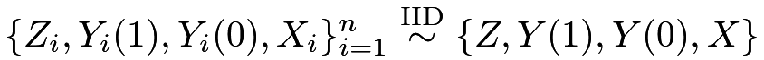 |
from a superpopulation. So we can drop the subscript  for quantities of this population. With a little abuse of notation, we define the population average causal effect as
for quantities of this population. With a little abuse of notation, we define the population average causal effect as
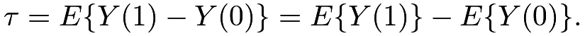 |
Under the superpopulation framework, we can formulate the CRE as below.
Definition 9.3 (CRE under the superpopulation framework)
We have
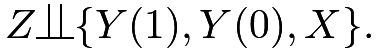 |
Under Definition 9.3, the average causal effect can be written as
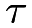 |
 |
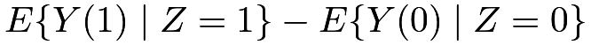 |
(42) | ||
|
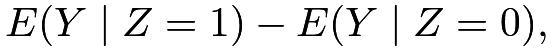 |
which equals the difference in expectations of the outcomes. The first line in (42) is the key step that leverages the value of randomization. Since  can be expressed as a function of the distributions of the observables, it is nonparametrically identifiable26. The formula (42) immediately suggests a moment estimator
can be expressed as a function of the distributions of the observables, it is nonparametrically identifiable26. The formula (42) immediately suggests a moment estimator
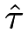
, which is the difference in means of the outcomes defined before. Conditioning on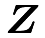
, this is then a standard two-sample problem comparing the means of two independent samples. We have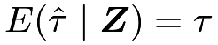 |
and
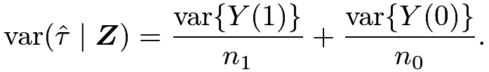 |
Under IID sampling, the sample variances are unbiased for the population variances, so Neyman, (1923)’s variance estimator is unbiased for
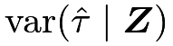
. The conservativeness problem goes away under this superpopulation framework.We can also discuss covariate adjustment. Based on the OLS decompositions (see Chapter 31)
 |
|
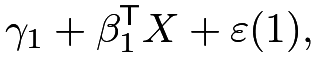 |
(43) | ||
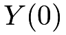 |
|
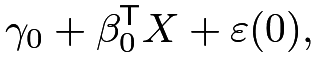 |
(44) |
we have
|
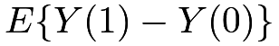 |
|||
|
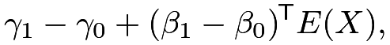 |
since the residuals
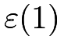
and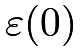
have mean zero due to the inclusion of the intercepts. We can use the OLS with the treated and control data to estimate the coefficients in (43) and (44), respectively. The sample versions of the coefficients are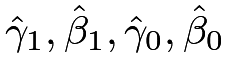
, so a covariate-adjusted estimator for is
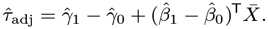 |
If we center covariates with  , the above estimator reduces to Lin, (2013)’s estimator
, the above estimator reduces to Lin, (2013)’s estimator
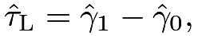 |
which equals the coefficient of  in the pooled regression with treatment-covariates interactions; see Proposition 6.2.
in the pooled regression with treatment-covariates interactions; see Proposition 6.2.
Unfortunately, the EHW variance estimator does not work for
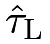
because of the additional uncertainty in the sample mean of covariates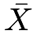
under the super population framework. Berk et al., (2013), Negi and Wooldridge, (2021) and Zhao and Ding, 2021a () proposed a correction of the EHW variance estimator by adding an extra term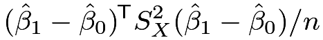 |
(45) |
where
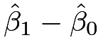
equals the coefficient of the interaction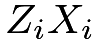
in obtaining Lin, (2013)’s estimator and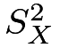
is the finite-population covariance matrix of the covariates. A conceptually simpler yet computationally intensive approach is to use the bootstrap to estimate the variance; see Chapter 30.F and Problem 9.2.50 Simulation under the CRE: the super population perspective
The following linestimator function can compute Lin, (2013)’s estimator, the EHW standard error, and the corrected standard error based on (45) for the super population.
I then use simulation to compare the EHW standard error and the corrected standard error. I choose sample size
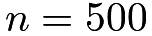
and use 2000 Monte Carlo repetitions. The potential outcomes are nonlinear in covariates and the error terms are not Normal. The true average causal effect equals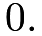
The following results confirm the theory. First, Lin, (2013)’s estimator is nearly unbiased. Second, the average EHW standard error is smaller than the empirical standard derivation, resulting in undercoverage of the 95% confidence intervals. Third, the average corrected standard error for super population is nearly identical to the empirical standard derivation, resulting in more accurate coverage of the 95% confidence intervals.
51 Extension to the SRE
We can extend the discussion in Section 49 to the SRE since it is equivalent to independent CREs within strata. The notation below will be slightly different from that in Chapter 5.
Assume that
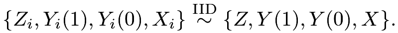 |
With a discrete covariate
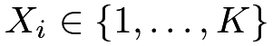
, we can formulate the SRE as below.Definition 9.4 (SRE under the super population framework)
We have
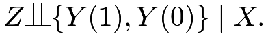 |
Under Definition 9.4, the conditional average causal effect can be rewritten as
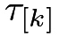 |
|
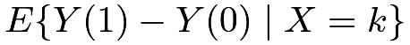 |
||
|
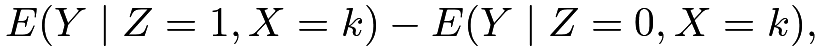 |
so the average causal effect can be rewritten as
|
||||
|
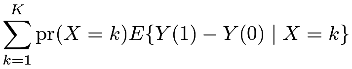 |
|||
|
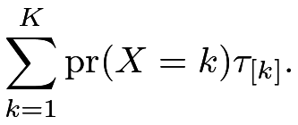 |
The discussion in Section 49 holds within all strata, so we can derive the superpopulation analog for the SRE. When there are more than two treatment and control units within each stratum, we can use
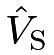
as the variance estimator for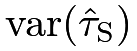
.52 Homework Problems
9.1 OLS decomposition of the observed outcome under the CRE
9.2 Variance estimation of Lin, (2013)’s estimator under the super population framework
Under the super population framework, simulate
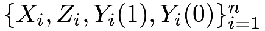
with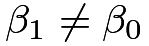
in (43) and (44). Calculate Lin, (2013)’s estimator in each simulated dataset. Compare the true variance and the following estimated variances:- 1.
the EHW robust variance estimator;
- 2.
the EHW robust variance estimator with the correction term defined in (45);
- 3.
the bootstrap variance estimator, with covariates centered at the beginning but not re-centered for each bootstrap sample;
- 4.
the bootstrap variance estimator, with covariates re-centered for each bootstrap sample.
9.3 Recommended reading
Ding et al., 2017a () provide a unified discussion of the finite population and superpopulation inferences for the average causal effect.
脚注
25. Pearl and Bareinboim, (2014) discussed the transportability problem from the perspective of causal diagrams.
26. In causal inference, we say that a parameter is nonparametrically identifiable if it can be determined by the distribution of the observed variables without imposing further parametric assumptions. See Definition 10.1 later for a more formal discussion.